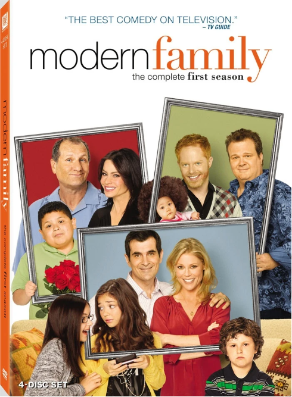
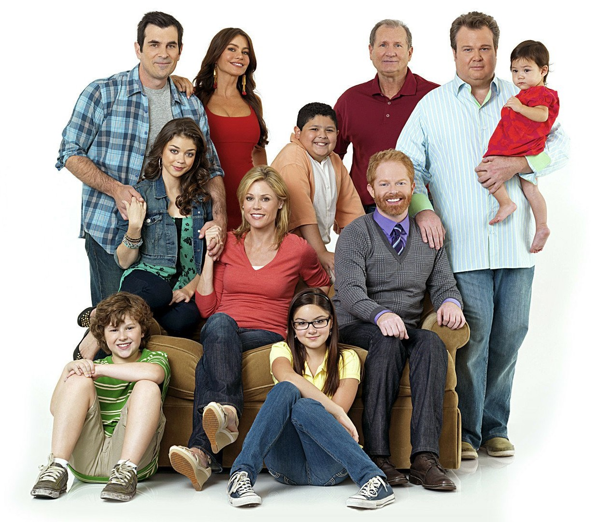

Background
Modern Family, created by Christopher Lloyd and Steven Levitan, is about a multigenerational family experiencing the joys and challenges of family life.The series is a mock documentary, or “mockumentary,” represented as being filmed by an unseen documentarian. It is a single-camera show with no laugh track. Characters often look directly at the camera and speak as though they are being interviewed. Modern Family features an ensemble cast and is known for its intelligent writing and earnest—never cynical—tone that finds affection, as well as comedy, in the struggles of family life.
The series begins with the introduction of three different, but related, families. Grumpy, no-nonsense middle-aged business executive Jay Pritchett (Ed O’Neill) is married to Gloria Delgado-Pritchett (Sofía Vergara), his beautiful, much-younger, second wife, who is an outspoken Colombian immigrant. They are raising Manny Delgado (Rico Rodriguez), Gloria’s good-hearted, sensitive, preteen son from her first marriage.
Mitchell Pritchett (Jesse Tyler Ferguson), Jay’s son from his first marriage, lives with his partner, Cameron Tucker (Eric Stonestreet). Mitchell is an anxious, tightly wound lawyer, while Cameron is an outgoing music teacher. The couple adopts a Vietnamese baby, Lily Tucker-Pritchett (played in later seasons by Aubrey Anderson-Emmons), and Cameron decides to become a stay-at-home father.
Claire Dunphy (Julie Bowen), Jay’s daughter from his first marriage, is married to Phil Dunphy (Ty Burrell). Claire is a stay-at-home mother who, like her brother Mitchell, is somewhat uptight, while Phil is a goofy real estate agent and amateur magician who thinks he’s a “cool dad.” Claire and Phil are raising their three children together: Haley Dunphy (Sarah Hyland), the eldest, is a silly rebellious teenager, while middle-child Alex Dunphy (Ariel Winter) is smart, responsible, and nerdy. Their youngest child, Luke Dunphy (Nolan Gould), is an affable and offbeat preteen.
Modern Family addresses situations that many real-life families encounter, such as sibling rivalry, the growing pains of adolescence, the ups and down of parenting, conflicts between spouses (and former spouses), and career successes and failures. One significant storyline that extends across the series concerns Jay’s struggle to accept that Mitchell is gay. Jay works to overcome his homophobia, ultimately becoming accepting and proud of his son. The characters evolve personally and professionally throughout the series.
Claire decides to enter the business world, working at the company that Jay founded and then becoming its chief executive officer. Gloria becomes a U.S. citizen, and she and Jay have a child, Joe Pritchett (played in later seasons by Jeremy Maguire). Cameron and Mitchell get married, and, in the series finale, they adopt another child. Former high-school football player Cameron becomes a successful football coach. Haley gives birth to twins and marries her on-again, off-again boyfriend Dylan Marshall (Reid Ewing).
Parenthood and Traditional Challenges
 James Parker of The Atlantic commented, "How does one 'parent'? Who does what, which 'role'? Is Dad sufficiently dad-like and Mom enough of a mom?"
Modern Family is notable for its portrayal of queer and non-traditional family structures, primarily through the characters of Mitchell Pritchett and Cameron Tucker, a gay couple raising their adopted Vietnamese daughter, Lily. Their family dynamic was one of the first on primetime television to center a same-sex couple navigating the challenges and rewards of parenthood, offering audiences an authentic look into LGBTQ+ family life. Throughout the series, Mitch and Cam’s relationship showcases both the unique joys and social obstacles facing LGBTQ+ parents, such as dealing with stereotypes, facing subtle forms of prejudice, and navigating societal expectations.
By depicting Mitch and Cam’s journey as parents and partners in a relatable, humorous light, Modern Family has played a significant role in normalizing LGBTQ+ families in mainstream media. The show’s inclusion of various family forms, from blended families to adoptive and queer families, reflects a more inclusive view of what family means today and has been credited with increasing public acceptance of LGBTQ+ families. This representation contributes to broader conversations on family diversity, challenging traditional norms and encouraging viewers to embrace different family structures as equally valid and loving.
Masculinity and Fatherhood
The show has also been praised for portrayal of masculinity and fatherhood. In a 2016 review, journalist Tim Dowling notes that “one of the main complaints voiced by so-called men’s rights activists is that in popular culture husbands and fathers are routinely portrayed as moronic incompetents … More sensible men’s advocates, meanwhile, maintain that men are still straitjacketed by old expectations, and given no room to express vulnerability, doubt, or any emotion besides anger.
Masculinity, it seems, just doesn’t furnish the modern male with very many acceptable ways to be.” While Dowling goes on to address the show’s portrayal of Phil as the most “subversive” of the four fathers, the characters of Jay, Cam, and Mitchell also contribute to a mediated understanding of fatherhood that legitimizes a variety of “acceptable ways to be” a modern father. Through the vehicle of comedy, which exposes each of the characters’ best and worst qualities, viewers can both witness and interrogate the qualities of the “traditional dad” and the “new dad,” a distinction that emerges quite clearly as a new generation of men take the parenting reins from their own fathers.